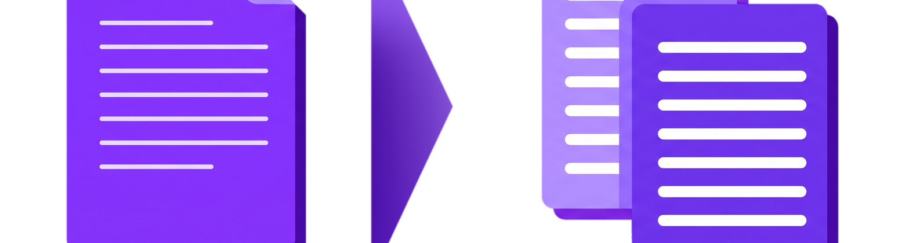
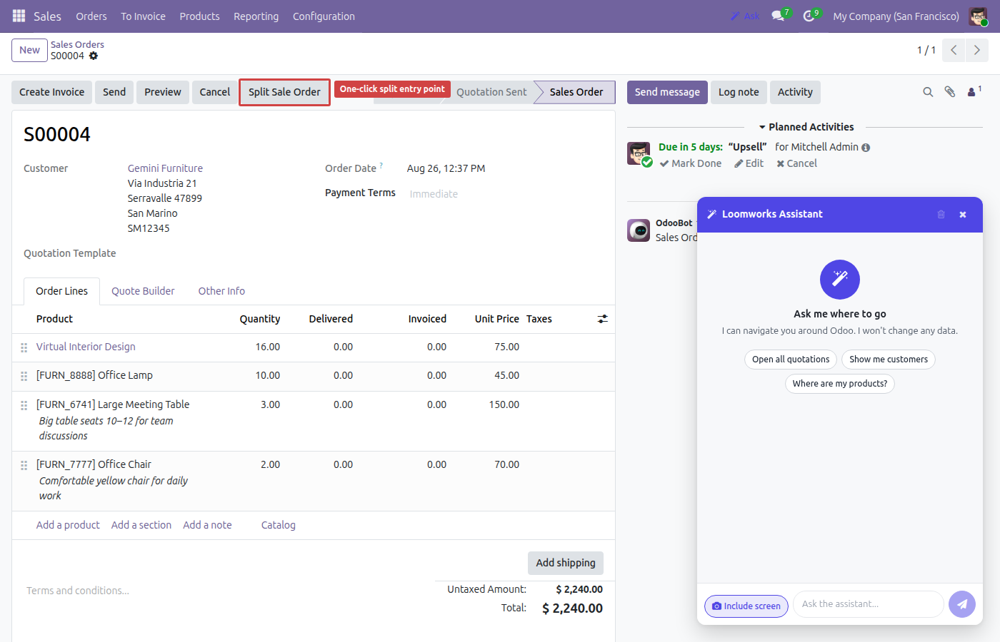
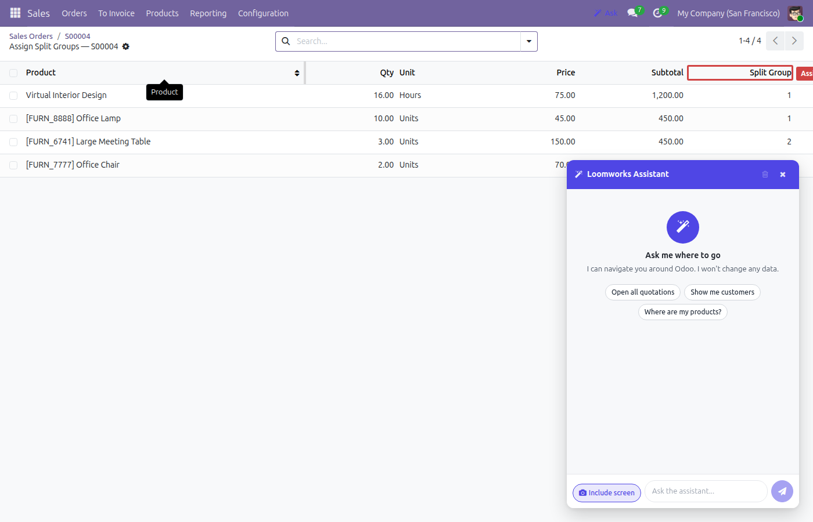
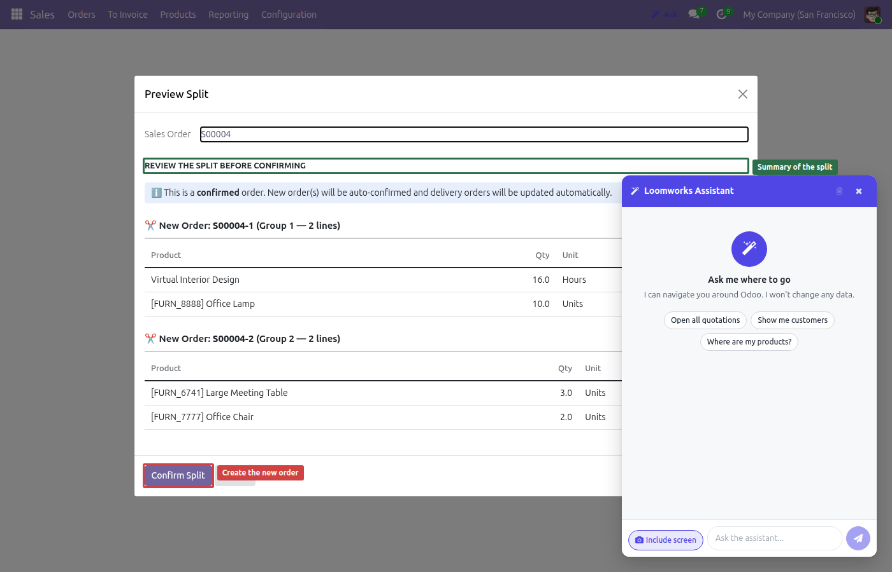
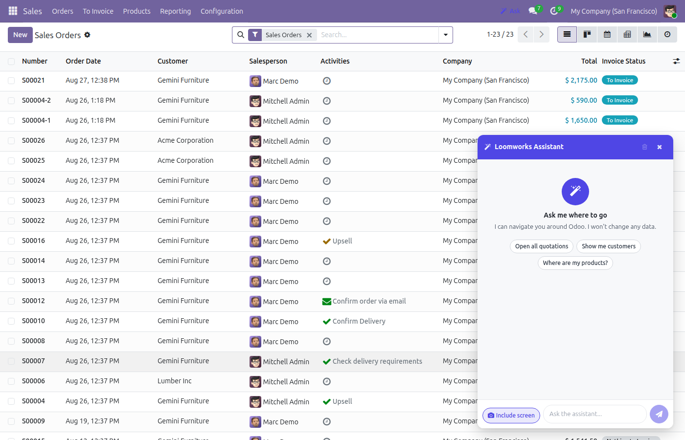
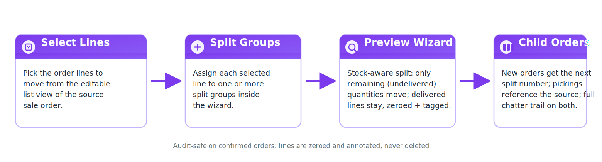

Split any sale order by selected lines into one or more new orders — with stock moves, pickings and invoicing handled correctly.
Assign order lines to split groups in an editable list view, then preview the split before confirming.
Undelivered quantities move to the new orders; done moves stay behind with full traceability.
Odoo 19 prevents line deletion on confirmed orders — lines are zeroed and annotated instead, so nothing is lost.
New orders get the next split number in the series and their pickings reference the correct source document.
Both the original and the new orders log what moved where, with links between them.




